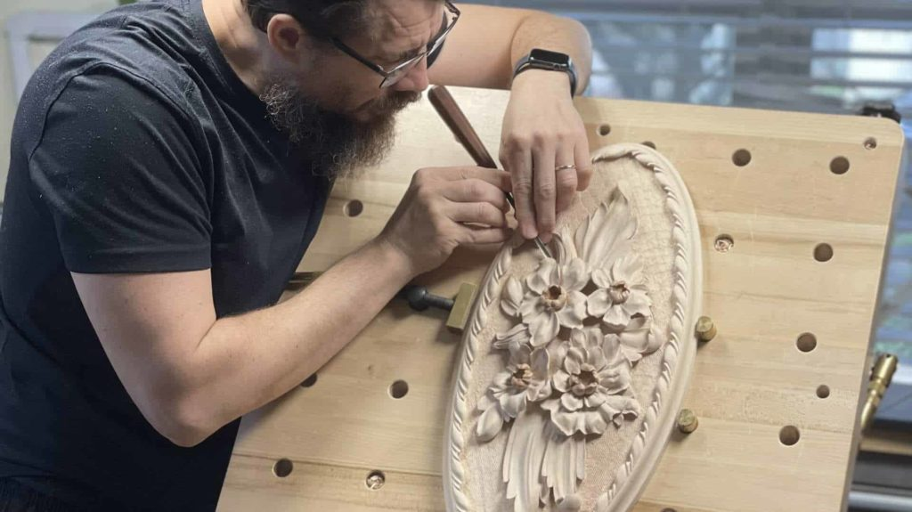
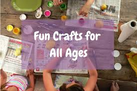

Knitting

Knitting is a process of using long needles to interlink or knot a series of loops made by one continuous thread. Each loop or knot connects to another one, and when enough loops have been made, the result is a flat piece of material called a textile.
Miniature Addiction
CRAFT IN AMERICA “Miniatures” examines the world of tiny objects and the artists that make them. From folk art to marionettes to tiny furniture, the artists of "Miniatures" reveal what motivates them to work at a scale that demands a masterful attention to detail.
Wood Carving

Are you looking for a hobby that allows you to create beautiful keepsakes or practical items without spending hundreds of dollars just to get started? Wood carving checks all of those boxes. When woodcarvers talk about their craft, they mention the tools they use, the kinds of wood they carve, and the types of carving they do.
Garden Therapy by Stephanie
Stephanie is a passionate gardener and an award-winning author who has years of experience in gardening. You will find articles, projects, and recipes where she shares her personal experience and methods with attractive photos on her gardening blog. She believes that digging the earth, spending time in the garden, and connecting with mother nature can bring immediate positive results. If you are new to gardening, her gardening blogs for beginners section is particularly insightful.
Sallys Baking Addiction
Sally shares approachable made-from-scratch desserts, comfort foods and easy dinner recipes that anyone can prepare. Brown Eyed Baker is a food blog dedicated to baking, desserts and easy comfort food. Each recipe features original photography!
Arts & Crafts

Arts and crafts describes a wide variety of activities involving making things with one's own hands. Arts and crafts is usually a hobby. Some crafts (art skills) have been practised since preshistoric times, others are more recent inventions..